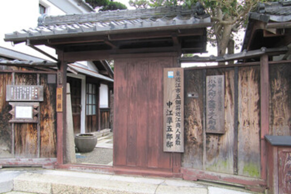

主な観光スポット
近江商人屋敷としてかつて使用された主な観光スポットをご紹介します！
近江商人屋敷藤井彦四郎邸
商家：旧藤井彦四郎邸
宮荘（みやしょう）町（旧：五個荘町大字宮荘）出身で、
スキー毛糸で知られる豪商、藤井彦四郎（ふじいひこしろう）（1876-1956）の
生家でもある旧宅をそっくりそのまま資料館としたものです。
総面積8155.3平方メートルの中に屋敷・土蔵・展示館があり、
現在の日本経済の礎を築いたといわれる近江商人の暮らしぶりはもとより
歴史や商法などがわかりやすく展示されています。
詳細情報
| 住所 | 滋賀県東近江市宮荘町681 |
|---|---|
| 営業時間 | 10時～16時30分 |
アクセス方法
NIPPONIA 五個荘
商家：旧外村宇兵衛邸
外村宇兵衛は、東京、横浜、京都、福井などに支店を有し、
呉服類の販売を中心に商圏を広げ、全国長者番付に名を連らねるなど近江を代表する豪商として地位を築きました。
庭は、作庭当時神崎郡一番と評されるほどであり、
庭園を飛び石づたいに足を運ぶと、
石灯籠や池泉が密度の濃い空間を作っています。
静寂の中から商魂たくましい人々の声が忍ばれます。
作家外村繁の本家でもあります。
土蔵、庭、舟板塀、水路を引き込んだ建物「あらいと」など
近江商人の生活文化にふれられます。
現在は、宿泊施設『NIPPONIA 五個荘 近江商人の町』としての活用がスタートしています。
詳細情報
| 住所 | 滋賀県東近江市五個荘金堂町645 |
|---|---|
| 営業時間 | 18時～10時30分 |
アクセス方法
近江商人屋敷外村繁邸
商家：旧外村繁邸
外村繁は、昭和10年「草筏」が芥川賞候補、昭和13年池谷賞を受賞、
昭和31年「筏」が野間文学賞を受賞した滋賀を代表する作家です。
外村宇兵衛家の分家として江戸時代末期に建てられた屋敷で、
総面積2395平方メートル・建物面積496平方メートルもあり、
門を入ると川の水を取り入れた川戸と呼ばれる水屋があり、
玄関に続く石畳の右手には広い庭があります。
ほかに、小説を書いていた小座敷や女中部屋・松の節つきの一枚板・蔵などがあり、
各部屋からは庭が見え、家の間取りはその用途によって幅広く使用できる工夫がされています。
詳細情報
| 住所 | 滋賀県東近江市五個荘金堂町631 |
|---|---|
| 営業時間 | 10時～16時30分 |
アクセス方法
近江商人屋敷中江準五郎邸
商家：旧中江準五郎邸
中江準五郎は、大正時代から戦前まで朝鮮半島で次々に百貨店を開設し
『百貨店王』と呼ばれた三中井一族の末弟中です。
屋敷は切妻瓦葺で、蔵が２棟あり、庭は池泉回遊式で池のまわりには
石灯籠や巨石を配しています。蔵には、滋賀県唯一の郷土民芸品
「小幡人形」が常設展示されています。
詳細情報
| 住所 | 滋賀県東近江市五個荘金堂町643 |
|---|---|
| 営業時間 | 10時～16時30分 |
アクセス方法
金堂まちなみ保存交流館
商家：中江富十郎邸
この金堂まちなみ保存交流館は、五箇荘を代表する近江商人「外村家」
「中江家」がかつて所有したお屋敷です。
当初、江戸時代〜明治時代には外村与左衛門家から分家した
外村宗兵衛のお屋敷でありました。
1873年（明治6年）に2階部分が増築された後に、中江富十郎の所有に。
現在は、まちなみ保存交流館がボランティアで管理運営を
しています。
季節に応じて企画展を開催し、コーヒーやかりんとうなど物産販売もあります。
詳細情報
| 住所 | 滋賀県東近江市五個荘金堂町904 |
|---|---|
| 営業時間 | 10時30分～16時30分 |
アクセス方法
八年庵
商家：旧塚本源三郎邸
豪商・塚本源三郎と、その母で文化人としても知られた塚本さと
の本宅。塚本源三郎が明治十三年に古屋を購入して移築し、
既存の土蔵を合わせた築二百年以上の邸宅で、
塚本家の理念を表す「質素倹約と勤勉」そのものの落ち着いた
佇まいと文人好みの簡素な山水庭が美しいです。
また、文化人としても知られる源三郎は、書家の雅号・八年
から同邸を「八年庵」と称し、
同庵を訪れた野村文挙、山元春挙、山岡鉄舟らの作品をはじめ、
塚本家と交流のあった勝海舟、福沢諭吉らの書簡、屏風、
掛け軸などが保管されています。
同庵内には、初代源三郎・さと夫妻の合作「寿と宝珠」の
掛け軸や香炉、勝海舟の書簡（本屋・奥座敷）をはじめ、
野村文挙など五個荘ゆかりの画家作品を展示する喫茶コーナー
もあり、ゆったりとした雰囲気のなか美術鑑賞が
できます。
詳細情報
| 住所 | 滋賀県東近江市五個荘川並町630 |
|---|---|
| 営業時間 | 9時30分～17時 |
アクセス方法